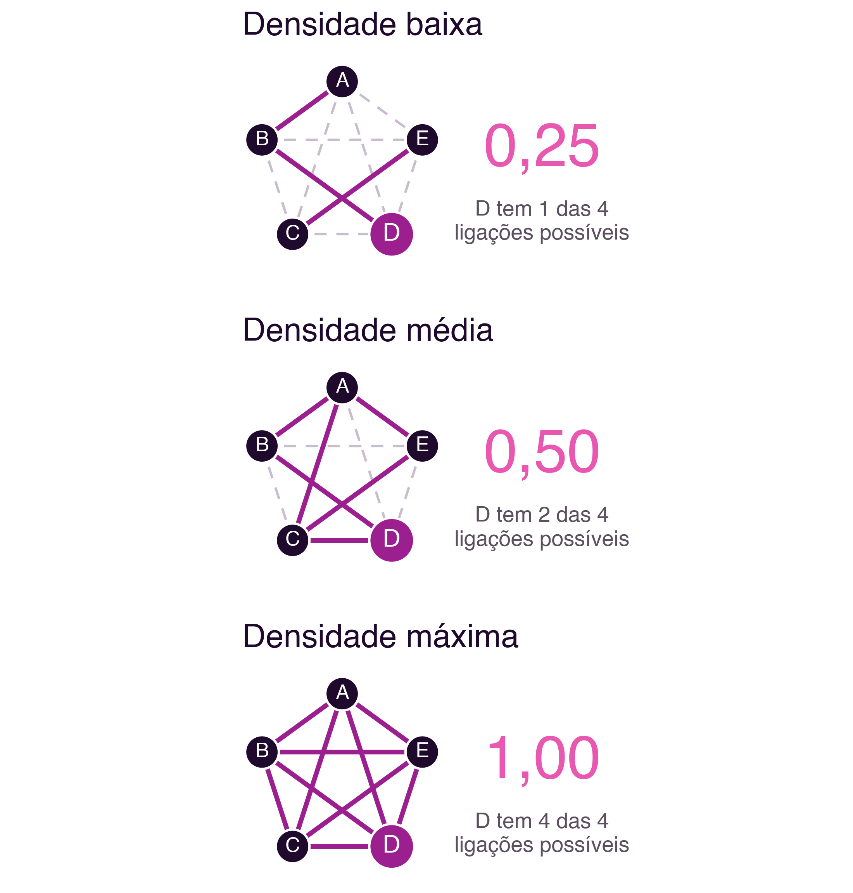

3 Redes Sociais: Métricas e Folksonomia
Redes Sociais: Métricas e Folksonomia
Introdução
O capítulo anterior introduziu, a par do grafo social, um segundo modelo de organização da informação em redes sociais: o grafo de interesses, em que a proximidade relevante deixa de ser entre pessoas e passa a ser entre uma pessoa e os temas com que interage (Secção 2.2.1). Este capítulo desenvolve essa ideia em duas direções complementares. Primeiro, mostra como analisar formalmente um grafo social, através de métricas concretas que permitem responder a perguntas como “quem é mais influente nesta rede?” ou “quão bem conectada está esta comunidade?”. Depois, aprofunda o outro lado da moeda, a organização de conteúdo por temas, através da folksonomia, a classificação coletiva que estrutura hoje praticamente todas as redes sociais através de **hashtags.
3.1 Representar uma Rede Social como Grafo
Analisar uma rede social de forma sistemática exige, antes de mais, representá-la como um grafo: um conjunto de nós, que representam pessoas ou organizações, ligados por arestas, que representam as suas relações. Esta é a mesma lógica de representação usada pelo sociograma de Moreno (Secção 1.2.1) e pelos grafos social e de interesses discutidos no capítulo anterior.
Uma aresta, ou seja, uma ligação entre dois nós, pode ser não-direcional, quando representa uma relação mútua e simétrica (por exemplo, uma amizade no Facebook, em que ambas as partes têm de aceitar a ligação), ou direcional, quando representa uma relação que só é verdadeira num sentido (por exemplo, seguir alguém no Instagram ou no X, o que não implica ser seguido de volta). Duas pessoas podem também não ter relação alguma entre si. Esta distinção é importante: a maioria das redes de amizade tradicionais (Facebook, LinkedIn) usa ligações não-direcionais, enquanto a maioria das redes centradas em conteúdo (Instagram, X, YouTube) usa ligações direcionais, o que tem implicações diretas para as métricas que se seguem (Figura 3.1).

3.2 Métricas para Análise de Redes Sociais
Uma vez representada como grafo, uma rede social pode ser analisada com métricas quantitativas, um conjunto de ferramentas que constitui a Análise de Redes Sociais (Social Network Analysis, SNA). As métricas mais utilizadas são as seguintes:
3.2.1 Caminho e distância
Um caminho entre dois nós é qualquer sequência de arestas que os liga, direta ou indiretamente. Numa rede social, existem tipicamente muitos caminhos possíveis entre dois nós quaisquer. A distância entre dois nós é o comprimento do caminho mais curto entre eles, medido pelo número de arestas percorridas. Foi precisamente esta noção de distância que a experiência de Milgram procurou medir empiricamente (Secção 2.1): quantas ligações, em média, separam duas pessoas escolhidas ao acaso.
3.2.2 Centralidade como Poder Social
A centralidade mede o quão bem posicionado um nó está na rede, sendo por isso também designada por poder social. Não existe uma única forma de medir centralidade: o sociólogo Linton Freeman propôs, num trabalho hoje considerado fundador da área, uma clarificação conceptual que distingue pelo menos três noções distintas de centralidade (Freeman 1978):
- Centralidade de grau (degree centrality): quantas ligações diretas tem um nó. Um nó com muitas ligações está, à partida, mais central.
- Centralidade de intermediação (betweenness centrality): com que frequência um nó se encontra no caminho mais curto entre outros dois nós. Um nó com centralidade de intermediação elevada funciona como ponte ou corretor de informação entre partes da rede que, de outra forma, estariam mais distantes.
- Centralidade de proximidade (closeness centrality): quão perto, em média, um nó está de todos os outros nós da rede. Um nó com centralidade de proximidade elevada consegue alcançar o resto da rede rapidamente.
Estas três noções captam aspetos diferentes de “importância” numa rede, e um nó pode ser central segundo uma medida e periférico segundo outra: um bom exemplo é um intermediário que liga duas comunidades distintas, mas que, dentro de cada uma delas, tem poucas ligações diretas, baixa centralidade de grau, mas centralidade de intermediação muito elevada (Figura 3.2).

3.2.3 Popularidade: grau de entrada e de saída
Em grafos direcionais, é útil distinguir entre ligações que chegam a um nó e ligações que saem dele. O grau de entrada (in-degree) é o número de ligações que chegam a um nó, e é frequentemente usado como medida direta de popularidade: no Instagram ou no X, corresponde, essencialmente, ao número de seguidores. O grau de saída (out-degree) é o número de ligações que saem de um nó, correspondendo, nesse mesmo exemplo, ao número de contas que esse utilizador segue.
3.2.4 Densidade
A densidade de um nó, ou de uma rede, mede a proporção entre o número de relações que efetivamente existem e o número de relações que seriam possíveis. Se um nó tem apenas um terço das ligações que poderia ter, dado o tamanho da rede, a sua densidade é de aproximadamente 0,33 (Figura 3.3). Redes com densidade elevada tendem a difundir informação mais depressa, mas também a ser mais suscetíveis a fenómenos de câmara de eco, precisamente porque quase todos estão ligados a quase todos.

3.3 Folksonomia: Classificação Coletiva de Conteúdo
Até agora, este capítulo tratou de como analisar relações entre pessoas. Mas grande parte da estrutura de uma rede social moderna resulta também de como o conteúdo é classificado e organizado, e é aqui que entra a folksonomia.
O termo folksonomia (folksonomy) foi cunhado por Thomas Vander Wal em 2007, a partir da junção de folk (povo, pessoas) com taxonomy (taxonomia) (Vander Wal 2007). Designa a classificação de conteúdo através de um processo de marcação (tagging) livre e coletivo, em vez de uma hierarquia de categorias definida a priori por especialistas de domínio.
A diferença para uma taxonomia tradicional é estrutural: numa taxonomia, um grupo de gestores define antecipadamente uma hierarquia de categorias, e todo o conteúdo tem de se encaixar nela. Numa folksonomia, não existe essa hierarquia prévia: as categorias, ou etiquetas (tags), surgem à medida que os próprios utilizadores classificam o conteúdo, sem qualquer controlo centralizado.
O processo de marcação pode representar-se de forma simples: um conjunto de pessoas, ou uma única pessoa, associa um conjunto de etiquetas a um conjunto de objetos (documentos, imagens, publicações) (Figura 3.4). Como pessoas diferentes classificam o mesmo objeto de formas diferentes, de acordo com a sua própria perspetiva, a folksonomia resultante é rica e heterogénea, mas também pode conter inconsistências.

Distinguem-se dois tipos de folksonomia (Vander Wal 2007): larga (broad folksonomy), em que um grande número de utilizadores marca os mesmos objetos, o que é útil para identificar os elementos mais populares de um conjunto, e estreita (narrow folksonomy), em que apenas uma ou poucas pessoas marcam cada objeto, tipicamente o próprio autor do conteúdo, o que preserva um vocabulário mais pessoal, mas dificulta a descoberta por terceiros.
Uma forma comum de visualizar o resultado agregado de uma folksonomia é a nuvem de etiquetas (tag cloud), uma representação em que as etiquetas mais usadas aparecem em destaque, tipicamente com letra maior ou mais escura, permitindo identificar rapidamente os temas dominantes de uma coleção (Figura 3.5).

3.3.1 Vantagens e problemas
A folksonomia tem vantagens claras: não depende de especialistas de domínio para definir categorias, permite que cada utilizador categorize livremente sem ter de aprender um vocabulário controlado, e captura o vocabulário real de quem efetivamente usa o sistema, não o de quem o desenhou.
Mas essa mesma liberdade gera problemas bem documentados: erros ortográficos, variações morfológicas (por exemplo, “rede social” e “redes sociais” registadas como etiquetas distintas), sinonímia (termos diferentes para o mesmo conceito), polissemia (o mesmo termo com significados diferentes consoante o contexto) e sobrecarga de etiquetas pouco relevantes. As plataformas atuais mitigam parcialmente estes problemas com correção ortográfica automática, sugestão de etiquetas já usadas por outros, e agrupamento semiautomático de etiquetas semanticamente próximas.
3.5 Síntese
Este capítulo desenvolveu duas ferramentas complementares para compreender a estrutura das redes sociais:
- Uma rede social pode ser representada como um grafo, com arestas direcionais ou não-direcionais consoante o tipo de relação
- As principais métricas de análise são caminho, distância, centralidade (de grau, de intermediação e de proximidade) (Freeman 1978), grau de entrada e de saída, e densidade
- A folksonomia é a classificação coletiva de conteúdo através de marcação livre, distinta de uma taxonomia hierárquica definida a priori (Vander Wal 2007)
- A folksonomia larga e a estreita representam um compromisso entre alcance e precisão da classificação
- A hashtag é a forma contemporânea da folksonomia, presente em praticamente todas as redes sociais atuais (Ibba et al. 2015)
3.6 Para Refletir
Pensa numa rede social que uses com frequência: consegues identificar, nas pessoas que segues, alguém com centralidade de intermediação elevada, ou seja, alguém que liga grupos de pessoas que de outra forma não estariam em contacto?
E quanto às hashtags que usas ou segues: são de folksonomia larga, uma etiqueta genérica usada por milhões de pessoas, ou de folksonomia estreita, específica de uma comunidade pequena? Que problemas de sinonímia ou de variação morfológica já observaste em hashtags (por exemplo, duas grafias diferentes do mesmo tema a dividirem a mesma conversa em duas)?